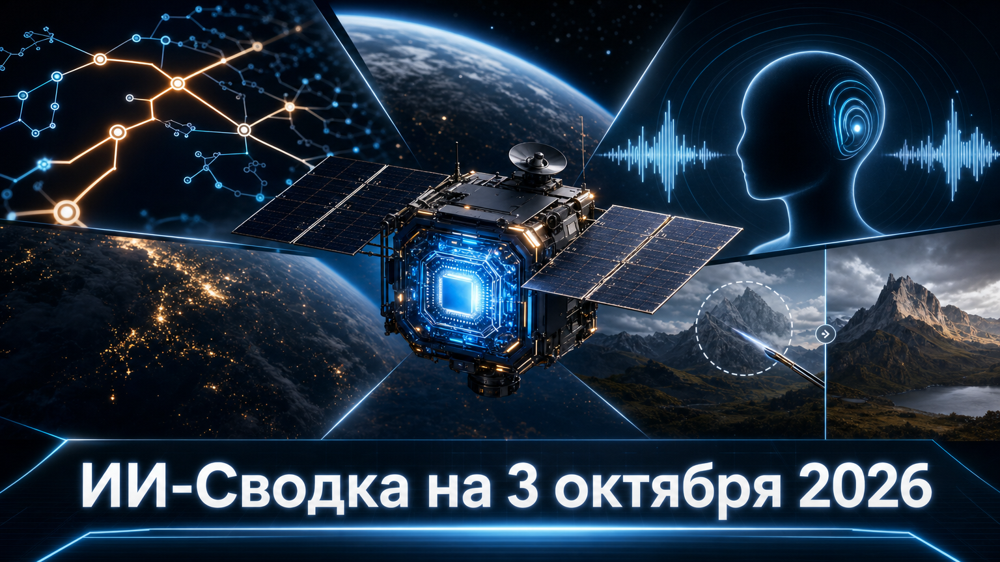

Новостей сегодня меньше, чем обычно
Свежая повестка показывает четыре разных траектории развития ИИ: поиск новых площадок для вычислений, выделение специализированных моделей для принятия решений, развитие голосовых интерфейсов и повышение управляемости генеративной графики.
Общий мотив дня — переход от универсального чат-бота к специализированным компонентам и инфраструктуре, которые можно встраивать в конкретные производственные процессы.
Google отправила на ракете SpaceX прототип вычислительного спутника, построенный Planet Labs, чтобы проверить работу TPU в космосе. Как пишет TechCrunch, аппарат должен проверить питание, охлаждение, радиационную устойчивость и исполнение моделей на ускорителе за пределами Земли.
Одновременно компания опубликовала исследование Project Suncatcher об архитектуре орбитальных дата-центров. Речь пока не о коммерческом кластере, а о раннем инфраструктурном эксперименте: экономическая целесообразность таких систем не доказана. Но запуск переводит идею космических вычислений из концептуальной стадии в практическую проверку оборудования.
Perplexity сообщила об open-source выпуске 27-миллиардной мультимодальной модели pplx-decider-v1 и запуске Decisions API. По данным HuggingNews, модель рассчитана не на развёрнутую текстовую генерацию, а на вероятностный выбор среди заранее заданных вариантов ответа.
Такой класс моделей может использоваться в маршрутизации запросов, классификации, проверке условий и управлении агентными workflow, где особенно важна оценка уверенности. Заявленные Perplexity показатели стоимости и качества остаются vendor claim: для практического выбора понадобятся независимые тесты, документация по лицензии и проверка условий доступа к весам.
Microsoft AI, согласно HuggingNews, вывела через API и MAI Playground три аудиомодели: MAI-Voice-2.1, ускоренную MAI-Voice-2.1-Flash и потоковую модель распознавания речи MAI-Transcribe-2-Streaming.
Набор ориентирован на голосовых агентов: одна часть стека отвечает за синтез речи, другая — за распознавание в реальном времени. В публикации приводятся заявленные Microsoft показатели задержки и качества распознавания, однако это не независимое сравнение. Для бизнеса важнее всего будут реальные условия работы с языками, шумом, стоимостью и доступностью API в нужных регионах.
Black Forest Labs представила FLUX 3 Image — модель для генерации и локального многопроходного редактирования изображений. Как сообщает HuggingNews, система позволяет менять отдельные области сцены, использовать до десяти референсных изображений и формировать результат в разрешении до 2K и 4K через fal.
Сдвиг от одной генерации к контролируемой правке особенно важен для дизайнерских, рекламных и e-commerce-процессов: им требуется не просто новая картинка, а предсказуемое изменение уже утверждённого макета. При этом доступная публикация опирается на заявление разработчика, поэтому качество сохранения деталей, устойчивость к сериям правок и коммерческие условия следует проверять на реальных задачах.